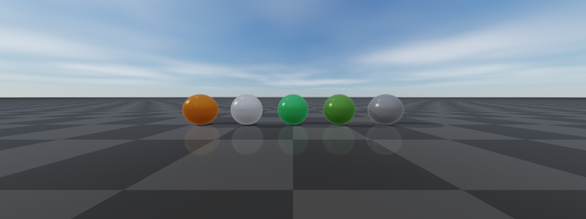
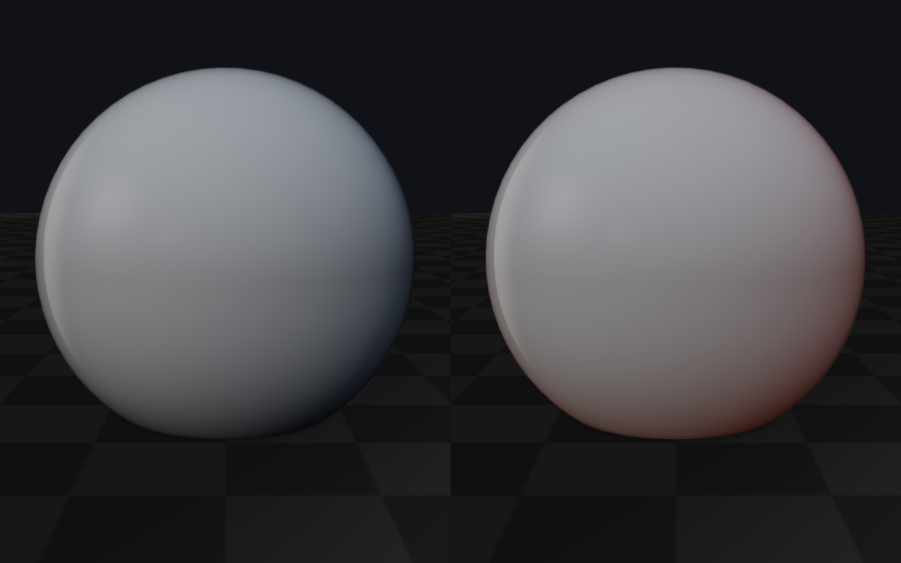
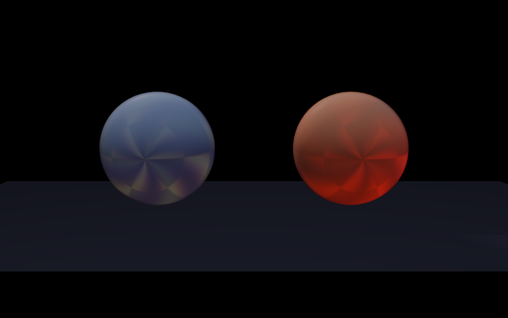
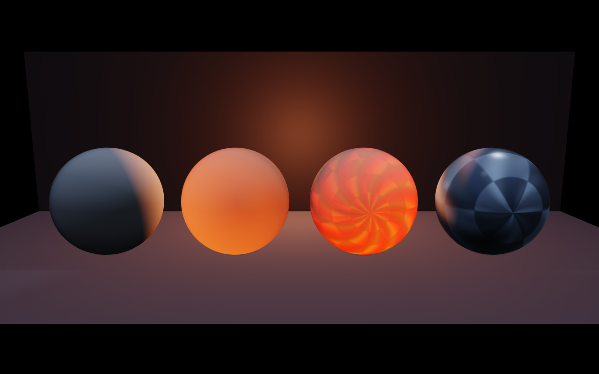
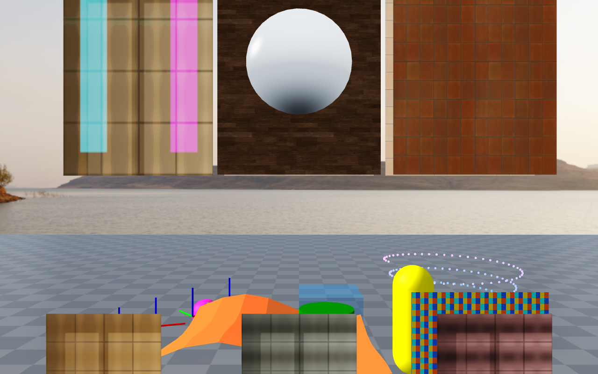
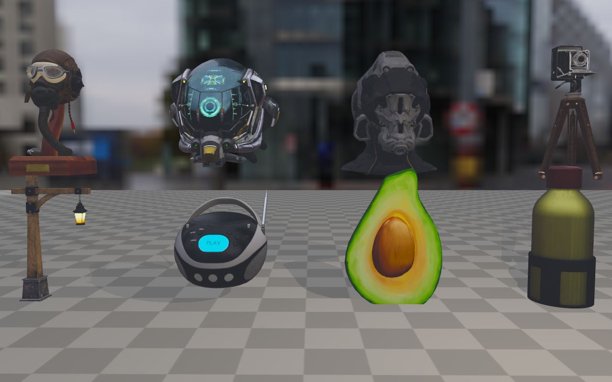
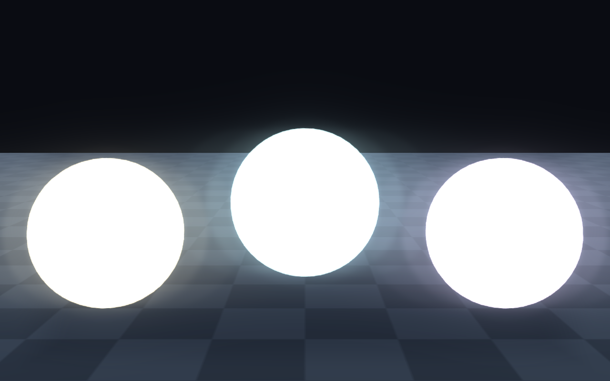
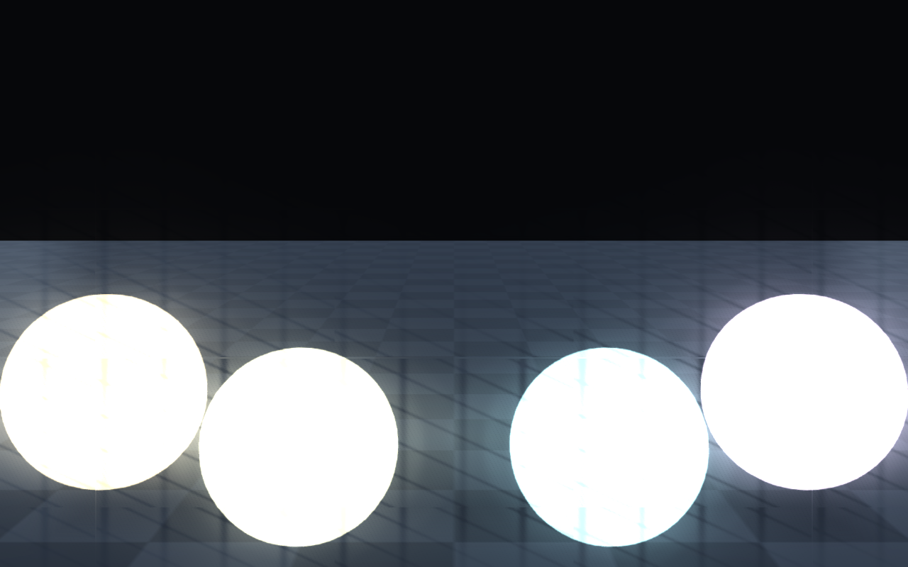
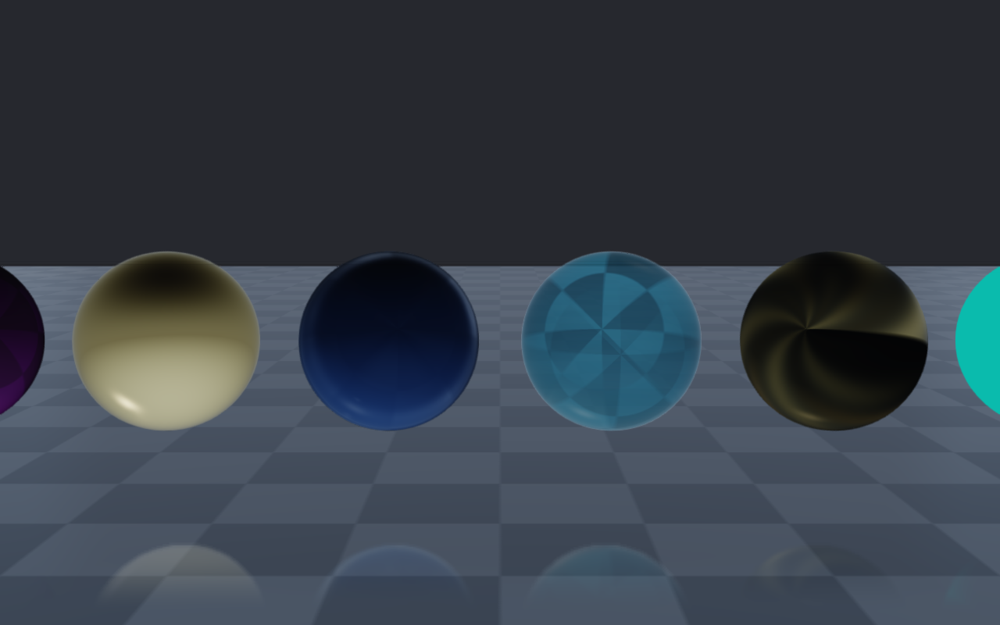
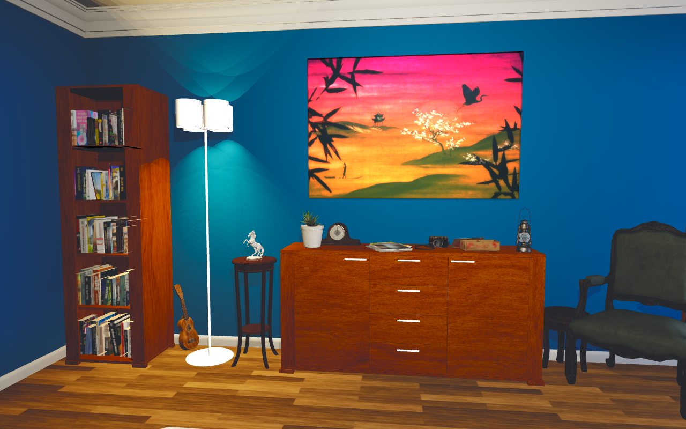

PBR materials
rayrai’s PBR materials cover the standard metallic-roughness slots plus
extensions for clearcoat, sheen, transmission, anisotropy, subsurface,
and detail textures. The importer fills these in automatically for glTF
assets; in-process code typically constructs materials with the static
factories described below and applies them via
Visuals::setMaterialOverride.
Visual-level material controls (override, remap, overlay, visibility range, shadow casting modes) are on the Custom visuals, instancing, and scene helpers page. Tone mapping and post-process are on Post-process effects.
Supported PBR inputs
rayrai supports a lightweight glTF-style metallic-roughness PBR path in addition to the existing simple Phong-style renderer. Simple color and legacy textured meshes stay on the fast path; PBR shader work is used only for meshes whose material requests PBR features or PBR texture maps.
Supported core inputs include:
base color factor and base color texture
metallic and roughness factors
metallic-roughness texture (or separate metallic + roughness textures)
normal texture (with OpenGL or DirectX
NormalMapConvention)bent-normal texture (for higher-quality AO/indirect occlusion)
occlusion texture
emissive factor and emissive texture (Add or Multiply
EmissionOperator)
The PBR material model also exposes a wider set of authoring slots used by
imported scenes and authored assets. The full raisin::Material::TextureSlot
list is: Albedo, Normal, BentNormal, Metallic, Roughness,
MetallicRoughness, Ao, Emissive, Clearcoat / ClearcoatRoughness
/ ClearcoatNormal, SheenColor / SheenRoughness, Transmission /
Refraction / Thickness, Subsurface / SubsurfaceTransmittance /
Backlight, Anisotropy, WeatherMask, Rim, Height,
DetailMask / DetailAlbedo / DetailNormal, Lightmap, and
TextureBlend. Each slot has a per-material UvTransform (offset, scale,
rotation) and an authored flag, plus a per-slot TextureChannel selector for
scalar maps.
Material behavior is controlled by several enums on raisin::Material:
Type:SIMPLE_COLOR,TEXTURED,PBR— user-facing type hint (the shader path is always PBR unlessforceSimpleShadingis set).AlphaMode:Opaque,Mask,Hash,Blend— glTF-style alpha treatment, with optionalAlphaAntiAliasing(AlphaToCoverageandAlphaToCoverageAndToOne) for masked materials.BlendMode:Mix,Add,Subtract,Multiply,PremultipliedAlpha— Godot-style transparent compositing.DistanceFadeMode:Disabled,PixelAlpha,PixelDither,ObjectDither— distance fade for far-away props and decals.DiffuseMode:Burley,Lambert,LambertWrap,Toon— direct diffuse BRDF.SpecularMode:SchlickGgx,Toon,Disabled— direct specular BRDF.DetailBlendMode:SoftMultiply,Mix,Add,Subtract,Multiply— detail-albedo compositing on top of the base color.CullMode:Back,Front,Disabled— per-material face culling override.DepthState:Inherit,Enabled,Disabled,Inverted— opt-in depth-state override for decals, overlays, and inspection surfaces.StencilCompare/StencilEffectMode(Disabled/Outline/Xray/Custom) — stencil-driven selection overlays.TextureRepeatModeandTextureFilter— per-material sampler overrides (Repeat/Mirror/DisabledandNearest/Linearwith optional mipmaps and anisotropy).BillboardMode:Disabled,Enabled,FixedZ,Particles— camera-facing rendering for foliage and sprites.UvLayer:Uv1/Uv2— secondary UV channel for detail and lightmap textures.FoliageType:None,Grass,LeafCard,Bush,Branch,TreeTrunk,Crop,Vine— wind-deformation class used by the foliage-wind path.
Most of these knobs are populated automatically by the Assimp/glTF importer. Authored materials can be constructed directly when in-process code needs a specific shading mode; the next section covers the importer’s fallback rules.
Material factories
For in-process code, raisin::Material exposes static factory helpers that
set sensible defaults for the common shading variants. Prefer these over hand-
filling the data members.
{kind=link}

(Image produced by doc_image_material_factories.)
using raisin::Material;
// PBR metallic/roughness material with no texture slots.
auto orange = Material::pbr("orange", glm::vec4(0.95f, 0.43f, 0.12f, 1.0f),
/*metallic=*/0.0f, /*roughness=*/0.45f);
// Unlit color (ignores scene lighting) — useful for HUDs and decals.
auto hud = Material::unlitColor("hud", glm::vec4(1.0f, 1.0f, 1.0f, 0.85f));
// Simple (non-PBR) lit color that uses the cheap mesh shader.
auto debug = Material::simpleColor("debug", glm::vec4(0.0f, 1.0f, 0.0f, 1.0f));
// Foliage default with two-sided lighting and wind classification.
auto leaf = Material::foliage("leaf", Material::FoliageType::LeafCard,
glm::vec4(0.32f, 0.58f, 0.21f, 1.0f));
// Neutral ground material (mid-grey, rough, non-metallic).
auto ground = Material::defaultGround();
A material’s intended shading path is queried with usesPbrShading(),
canUseCorePbr() (compact core PBR shader is sufficient), and
requiresHighFidelityPbr() (clearcoat, sheen, transmission, anisotropy, etc.
require the high-fidelity PBR shader). forceSimpleShading is a per-material
escape hatch to route through the cheap simple shader even when PBR fields are
set; RenderQualitySettings::forceSimpleMaterialShading is the global
equivalent for high-throughput RL renders that do not need PBR.
Lighting is based on rayrai’s main light, optional additional lights, shadow maps, HDR/image-based lighting when configured, and optional reflection probes. Color textures are uploaded as sRGB; data maps such as normal, metallic-roughness, and AO remain linear. Normal maps require tangent data; glTF assets usually provide it, and rayrai generates or imports tangent data where possible. The PBR path is suitable for preview, data generation, and asset inspection; it is not an offline path tracer.
Heightmap terrain uses a dedicated rough PBR material in both in-process and TCP
viewer paths. Heightmap color maps are treated as terrain albedo, but the material
keeps metallic at zero, roughness high, and planar reflection disabled even when
RenderQualitySettings.reflectiveGround is enabled. This keeps outdoor terrain
from looking like a mirror while retaining sky/IBL fill and normal PBR lighting.
The shipped PBR examples and tools are:
rayrai_pbr_material_grid: PBR material coverage across a primitive grid under matching HDR/IBL lighting.rayrai_pbr_texture_maps: texture-slot coverage for base color, normal, metallic-roughness, occlusion, and emissive maps.rayrai_visual_asset_support: authored glTF/GLB scene import with PBR materials, embedded lights, reflection-probe sidecars, and screenshot output while keeping visual and collision geometry separate.rayrai_quality_lighting: additional-light and quality preset coverage for inspecting PBR materials.
Authored light sources are imported through:
KHR_lights_punctualfrom the glTF/GLB file for directional, point, and spot lights.*.rayrai_lights.jsonfor Blender area lights with size, direction, color, and energy.
For best results, keep the authored scene in metric scale, keep Z as up, and prefer glTF/GLB over OBJ. OBJ is useful for simple geometry interchange, but it loses too much of the scene-level material and light data needed for high-quality rendering.
Material import details
The Assimp/glTF importer is asset-agnostic. It does not special-case the blue-wall scene or material names. It follows this priority:
Use explicit material texture slots from the source asset when present.
Treat base-color and emissive maps as color textures.
Treat normal, metallic-roughness, occlusion, masks, and other data maps as linear data.
Preserve normal-map scale and detect common OpenGL-vs-DirectX normal-map naming.
Use embedded glTF textures when available.
Search sibling texture files for common PBR map names when the source material omits a slot but the files are packaged next to the asset.
Keep simple solid-color materials on the simple path unless normal maps or PBR features require the PBR shader.
This fallback behavior is meant to support real downloadable assets whose Blender, glTF, FBX, DAE, and OBJ exports often disagree about how texture slots are authored. If an asset renders white or flat, first check the import report/debug output for which texture slots were found and whether the file paths exist next to the scene.
Visual assets and collision assets
rayrai visual meshes are renderer assets. URDF models can define separate
visual and collision meshes, and standalone rayrai visuals can use glTF
material and texture data for inspection or presentation without becoming
collision geometry in raisim::World. Keep this separation when an asset has
high-detail visual triangles, PBR materials, or texture maps.
Use this pattern when you want realistic visuals with collision meshes tuned for physics:
auto* robot = world.addArticulatedSystem("anymal_c/urdf/anymal.urdf");
auto* object = world.addArticulatedSystem("ycb/002_master_chef_can.urdf");
Only call World::addMesh for collision when the mesh is intentionally part
of the physics model. The current textured glTF and imported scene examples keep
renderer assets separate from collision geometry; the physics model still comes
from the URDF or explicit collision objects.
Subsurface scattering and backlight
rayrai approximates subsurface scattering with three controls that combine cheaply for plausible skin, leaves, wax, and thin plastic.
viewerSubsurfaceWrap/viewerSubsurfaceTintwrap the diffuse falloff past 90 degrees and tint the wrap region (warm flesh tones by default). This is a global, cheap post-shading approximation.The
SubsurfaceandSubsurfaceTransmittanceMaterialtexture slots feed a per-material thickness/transmission term.Material::DiffuseModeToonandLambertWrapmake the wrap response artist-controllable.The
Backlightslot drives a separate light contribution that comes from behind the surface — useful for translucent leaves, candle wax, and thin fabric in rim lighting.
The two showcase images contrast a wrap-only subsurface response (cheap, shader-side) against an authored skin material that uses the dedicated SSS texture slots and tuned wrap. The backlight image shows leaves lit from behind the camera receiving energy through the leaf rather than just on the camera side.
// Global wrap-light approximation — cheapest path.
auto quality = viewer.getRenderQualitySettings();
quality.viewerSubsurfaceWrap = 0.45f;
quality.viewerSubsurfaceTint = glm::vec3(1.0f, 0.78f, 0.66f); // warm flesh
viewer.setRenderQualitySettings(quality);
// Authored skin material driving the SSS texture slots.
auto skin = raisin::Material::pbr(
"skin", glm::vec4(0.96f, 0.78f, 0.68f, 1.0f),
/*metallic=*/0.0f, /*roughness=*/0.55f);
skin.diffuseMode = raisin::Material::DiffuseMode::LambertWrap;
skin.subsurfaceMap = subsurfaceMapId;
skin.subsurfaceTransmittanceMap = transmittanceMapId;
// Translucent leaf with backlight response.
auto leaf = raisin::Material::foliage(
"leaf", raisin::Material::FoliageType::LeafCard,
glm::vec4(0.32f, 0.58f, 0.21f, 1.0f));
leaf.backlightMap = leafBacklightMapId;
leaf.cullMode = raisin::Material::CullMode::Disabled; // two-sided
viewerSubsurfaceWrap |
Authored skin (SSS slots) |
|---|---|
 |
 |
Backlight slot |
|
 |
Bloom, HDR, and PBR
Bloom (bloomEnabled) uses a Gaussian-pyramid down/upsample with knee
threshold (bloomThreshold, bloomKnee), strength, source clamp, and
optional anamorphic squeeze. The bloomDirtTexture slot multiplies bloom
by a lens-dirt mask for a stylized lens look. Emissive surfaces with
intensities above the threshold bloom naturally.
HDR / IBL setup loads a single equirectangular HDR file and integrates the diffuse irradiance + GGX-prefiltered specular cubemaps plus the split-sum BRDF lookup. Reflective surfaces sample these instead of a constant ambient term, which is what makes metals look like metals.
PBR materials with full texture coverage (base colour, normal,
metallic-roughness, AO, emissive, plus the extension slots) are illustrated by
the 07_pbr_material_maps reference image; an authored Poly Haven scene is
included for context.
// Bloom on emissive surfaces above threshold + optional lens-dirt mask.
auto quality = viewer.getRenderQualitySettings();
quality.bloomEnabled = true;
quality.bloomThreshold = 1.20f; // HDR luminance threshold
quality.bloomStrength = 0.28f;
quality.bloomRadius = 4.0f;
quality.bloomKnee = 0.22f;
quality.bloomQuality = 1; // 0=fast, 1=high
quality.bloomDirtTexture = lensDirtTextureId; // optional
quality.bloomDirtStrength = 0.35f;
viewer.setRenderQualitySettings(quality);
// HDR / IBL on a single visual.
auto env = raisin::PbrEnvironment::loadFromHdrFile("/path/studio.hdr");
metalSphere->setPbrEnvironment(env);
// Author a fully-textured PBR material for an imported asset.
auto floor = raisin::Material::pbr("hardwood",
glm::vec4(0.42f, 0.27f, 0.18f, 1.0f),
/*metallic=*/0.0f, /*roughness=*/0.42f);
floor.albedoMap = hardwoodAlbedoMapId;
floor.normalMap = hardwoodNormalMapId;
floor.metallicRoughnessMap = hardwoodMetallicRoughnessMapId;
floor.aoMap = hardwoodAoMapId;
floor.emissiveMap = 0; // unused
floorVisual->setMaterialOverride(floor);
HDR / IBL |
PBR material maps |
|---|---|
 |
 |
Bloom (emissive) |
Bloom with dirt mask |
 |
 |
Material extensions |
Authored scene (Poly Haven Blue Wall) |
 |
 |